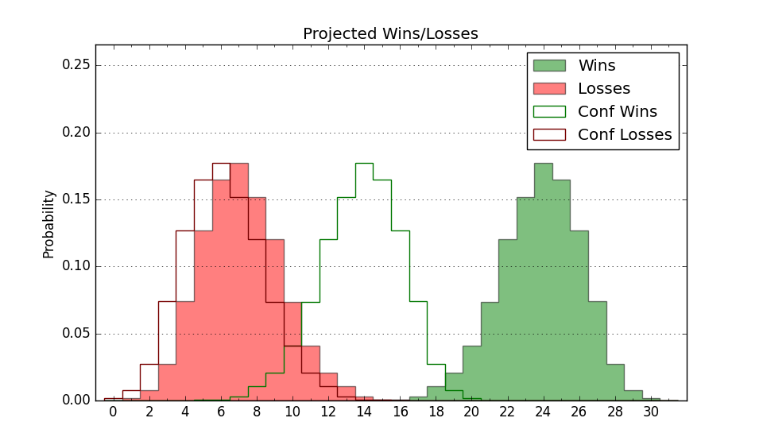

| Home | Game Probabilities | Conferences | Preseason Predictions | Odds Charts | NCAA Tournament |
| City: | Blacksburg, Virginia | |
| Conference: | ACC (9th)
| |
| Record: | 8-12 (Conf) 13-18 (Overall) | |
| Ratings: | Comp.: 1.0 (151st) Net: 1.0 (151st) Off: 106.9 (165th) Def: 105.9 (162nd) SoR: 0.0 (104th) |
| Remaining | ||||||
|---|---|---|---|---|---|---|
| Date | Opponent | Win Prob | Pred. | |||
| Previous | Game Score | |||||
| Date | Opponent | Win Prob | Result | Off | Def | Net |
| 11/4 | Delaware St. (308) | 89.2% | W 83-60 | -3.1 | 9.5 | 6.4 |
| 11/8 | USC Upstate (345) | 93.6% | W 93-74 | 10.0 | -8.2 | 1.8 |
| 11/11 | Winthrop (172) | 69.5% | W 58-52 | -19.7 | 25.6 | 5.9 |
| 11/15 | (N) Penn St. (61) | 19.4% | L 64-86 | -11.5 | -0.1 | -11.6 |
| 11/20 | Jacksonville (189) | 72.1% | L 64-74 | -14.1 | -7.4 | -21.5 |
| 11/25 | (N) Michigan (26) | 8.9% | L 63-75 | -6.8 | 15.6 | 8.8 |
| 11/27 | (N) South Carolina (86) | 28.1% | L 60-70 | -10.9 | -3.8 | -14.7 |
| 12/4 | Vanderbilt (52) | 25.7% | L 64-80 | -8.3 | -6.4 | -14.7 |
| 12/7 | Pittsburgh (51) | 25.3% | L 59-64 | -13.0 | 15.1 | 2.1 |
| 12/12 | North Carolina A&T (331) | 91.8% | W 95-67 | 1.4 | 3.9 | 5.3 |
| 12/15 | Navy (285) | 86.5% | W 80-72 | 15.3 | -24.8 | -9.5 |
| 12/21 | (N) Saint Joseph's (84) | 27.3% | L 62-82 | -7.4 | -15.6 | -23.0 |
| 12/31 | @Duke (1) | 0.9% | L 65-88 | 15.3 | -3.3 | 12.0 |
| 1/4 | Miami FL (188) | 72.1% | W 86-85 | 12.1 | -16.6 | -4.5 |
| 1/8 | @Stanford (83) | 16.9% | L 59-70 | -6.3 | 4.0 | -2.3 |
| 1/11 | @California (110) | 25.0% | W 71-68 | 10.8 | 4.7 | 15.5 |
| 1/15 | North Carolina St. (115) | 54.9% | W 79-76 | 20.1 | -17.3 | 2.8 |
| 1/18 | Wake Forest (71) | 36.0% | L 63-72 | -2.3 | -5.4 | -7.8 |
| 1/22 | @Georgia Tech (101) | 22.7% | L 64-71 | -1.2 | 1.5 | 0.3 |
| 1/25 | Clemson (25) | 15.2% | L 57-72 | -1.7 | -3.2 | -4.9 |
| 1/29 | @Florida St. (78) | 16.2% | W 76-66 | 17.1 | 15.9 | 33.1 |
| 2/1 | @Virginia (107) | 24.8% | W 75-74 | 25.4 | -10.9 | 14.6 |
| 2/5 | SMU (41) | 21.3% | L 75-81 | 16.7 | -12.0 | 4.7 |
| 2/8 | @Notre Dame (92) | 19.8% | W 65-63 | -2.3 | 19.9 | 17.6 |
| 2/15 | Virginia (107) | 52.9% | L 70-73 | 8.1 | -16.5 | -8.4 |
| 2/18 | @Boston College (194) | 44.2% | L 36-54 | -46.3 | 18.1 | -28.2 |
| 2/22 | @Miami FL (188) | 43.2% | W 81-68 | 12.5 | 11.5 | 24.1 |
| 2/25 | Louisville (23) | 14.5% | L 66-71 | -6.5 | 16.5 | 10.0 |
| 3/1 | Syracuse (127) | 58.6% | W 101-95 | 21.4 | -16.1 | 5.3 |
| 3/4 | North Carolina (32) | 18.3% | L 59-91 | -13.2 | -18.3 | -31.5 |
| 3/8 | @Clemson (25) | 5.0% | L 47-65 | -15.6 | 16.2 | 0.6 |
| Stats & Trends | |||||
|---|---|---|---|---|---|
| Current | Day | Week | Month | Season | |
| Composite | 1.0 | -- | -0.0 | -1.2 | -7.3 |
| Comp Rank | 151 | -- | -- | -12 | -61 |
| Net Efficiency | 1.0 | -- | -0.0 | -1.1 | -- |
| Net Rank | 151 | -- | -- | -11 | -- |
| Off Efficiency | 106.9 | -- | +0.1 | -1.5 | -- |
| Off Rank | 165 | -- | -2 | -42 | -- |
| Def Efficiency | 105.9 | -- | -0.1 | +0.5 | -- |
| Def Rank | 162 | -- | -3 | +21 | -- |
| SoS Rank | 72 | -- | -3 | -9 | -- |
| Exp. Wins | 13.0 | -- | -- | -0.6 | -2.1 |
| Exp. Conf Wins | 8.0 | -- | -- | -0.6 | +0.3 |
| Conf Champ Prob | 0.0 | -- | -- | -- | -0.5 |

| Advanced Stats | ||
|---|---|---|
| Stat | Value | Rank |
| Off Eff FG % | 0.532 | 106 |
| Off Ast Ratio | 0.155 | 125 |
| Off ORB% | 0.324 | 76 |
| Off TO Rate | 0.165 | 302 |
| Off FT Ratio | 0.333 | 173 |
| Def Eff FG % | 0.507 | 164 |
| Def Ast Ratio | 0.153 | 236 |
| Def ORB% | 0.258 | 71 |
| Def TO Rate | 0.151 | 150 |
| Def FT Ratio | 0.287 | 75 |